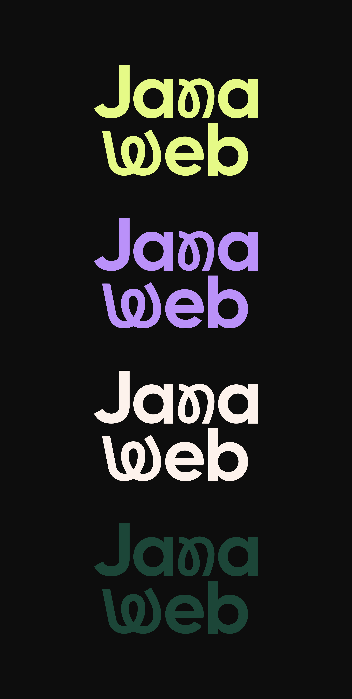

Typographie
Gilroy Bold
Projet réalisé lors de mon alternance chez Jana Web, visant à refondre leur identité visuelle. jana-agenceweb.com

Refonte Identité Visuelle & Branding

Gilroy Bold
Projet réalisé lors de mon alternance chez Jana Web, visant à refondre leur identité visuelle. jana-agenceweb.com